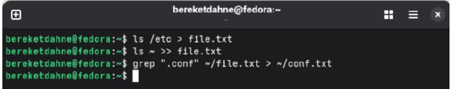
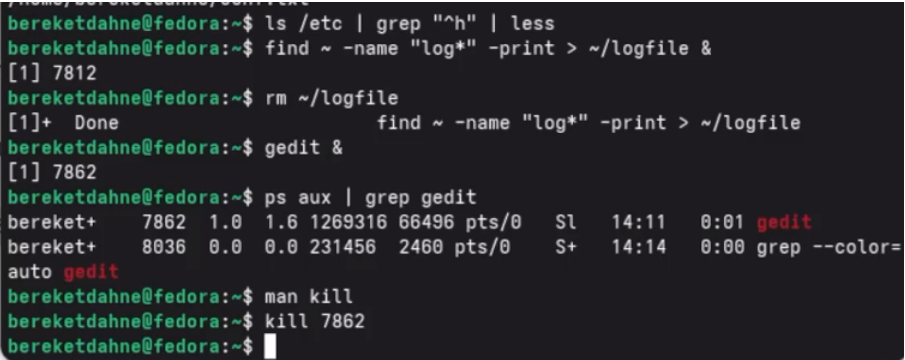
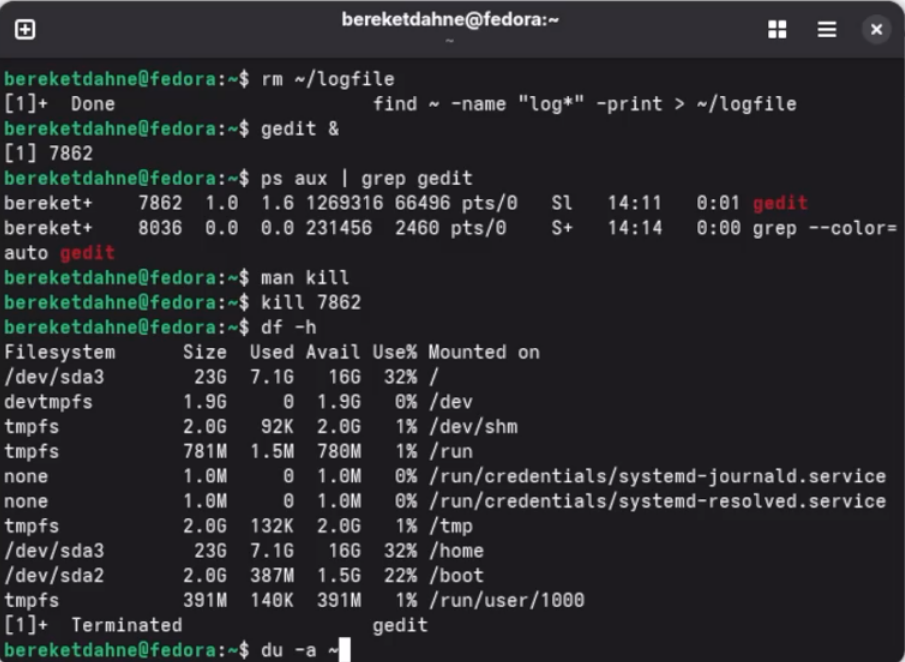

2026-10-02
Ознакомление с инструментами поиска файлов и фильтрации текстовых данных. Приобретение практических навыков по управлению процессами, по проверке использования диска и обслуживанию файловых систем.
ls /etc > ~/file.txtls ~ >> ~/file.txtgrep ".conf" ~/file.txt > ~/conf.txtfind ~ -name "c*" -printls /etc | grep "^h" | lessfind ~ -name "log*" -print > ~/logfile &rm ~/logfilegedit &ps aux | grep geditman kill
kill <PID>df -h
du -a ~find ~ -type dСкриншот 1: Запись файлов и поиск .conf

Скриншот 2: Поиск файлов и управление процессами

Скриншот 3: Проверка диска

1. Какие потоки ввода-вывода вы знаете? stdin (стандартный ввод, дескриптор 0), stdout (стандартный вывод, дескриптор 1), stderr (стандартный вывод ошибок, дескриптор 2).
2. Объясните разницу между операцией > и
>>. > перезаписывает файл,
>> добавляет в конец файла.
3. Что такое конвейер? Конвейер (|)
передаёт вывод одной команды на вход другой команде.
4. Что такое процесс? Чем это понятие отличается от программы? Процесс — это выполняющаяся программа. Программа — это файл с инструкциями, процесс — это активное выполнение этих инструкций.
5. Что такое PID и GID? PID (Process ID) — идентификатор процесса. GID (Group ID) — идентификатор группы.
6. Что такое задачи и какая команда позволяет ими
управлять? Задачи (jobs) — это процессы, запущенные в фоновом
режиме. Управляются командой jobs.
7. Найдите информацию об утилитах top и htop. Каковы их
функции? top и htop — утилиты для
мониторинга процессов в реальном времени. Показывают загрузку CPU,
памяти, список процессов.
8. Назовите и дайте характеристику команде поиска файлов.
Приведите примеры использования этой команды. Команда
find ищет файлы по заданным критериям. Пример:
find ~ -name "*.txt" -print.
9. Можно ли по контексту (содержанию) найти файл? Если да, то
как? Да, с помощью команды grep. Пример:
grep "текст" file.txt.
10. Как определить объем свободной памяти на жёстком
диске? Команда df -h.
11. Как определить объем вашего домашнего каталога?
Команда du -sh ~.
12. Как удалить зависший процесс? Найти PID командой
ps aux | grep имя, затем kill <PID> или
kill -9 <PID> для принудительного завершения.
В ходе выполнения лабораторной работы № 8 я ознакомился с инструментами поиска файлов и фильтрации текстовых данных. Я приобрёл практические навыки по управлению процессами, проверке использования диска и обслуживанию файловых систем.
Таким образом, цель работы была полностью достигнута. ```